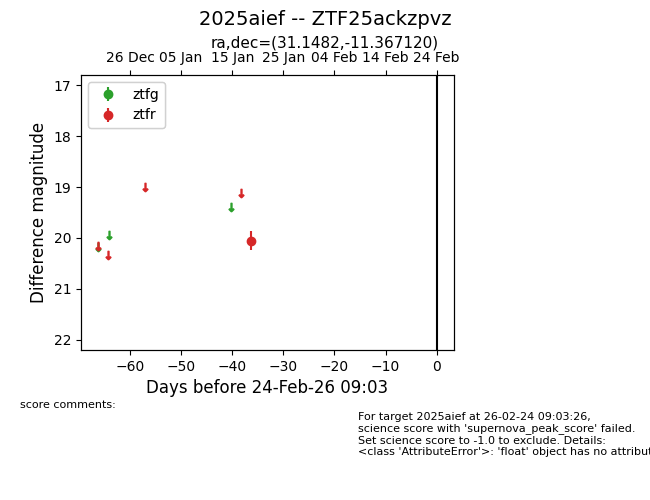
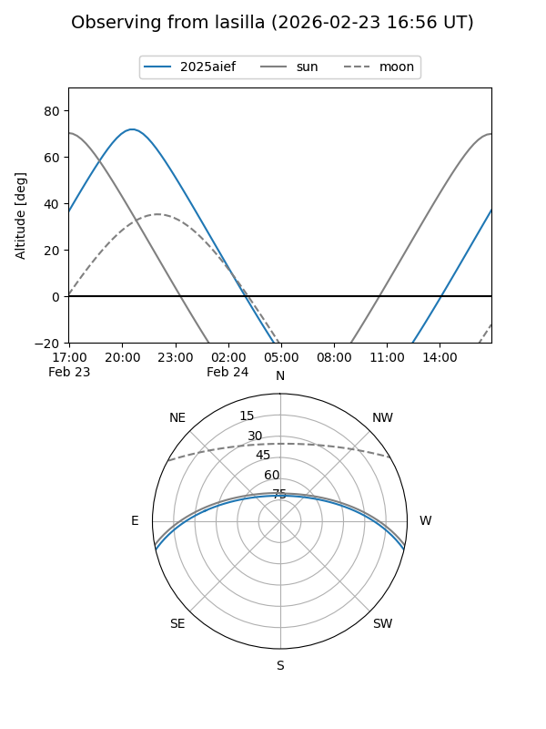
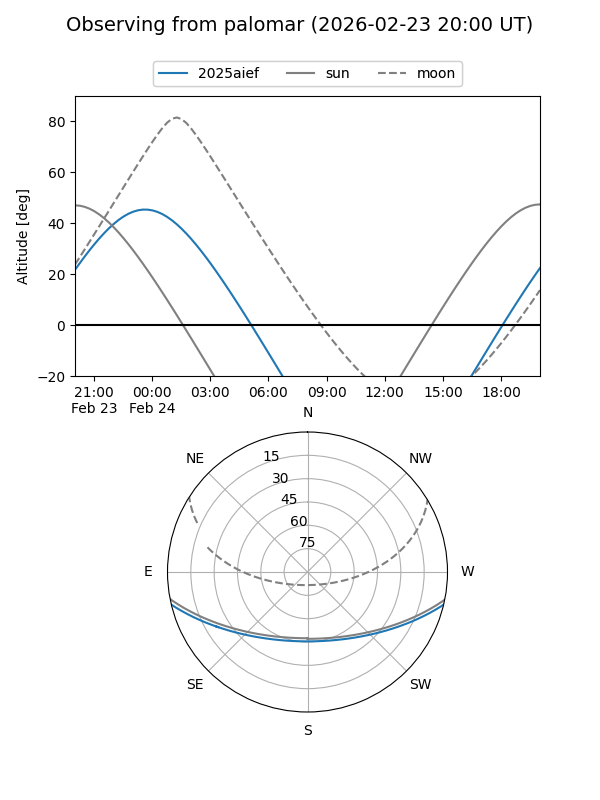

2025aief
Target 2025aief at 2026-01-21 03:50
Aliases and brokers:
FINK: link
Lasair: link
ALeRCE: link
TNS: link
YSE: link
alt names
ZTF25ackzpvz (ztf,fink_ztf)
2025aief (tns,yse)
Coordinates:
equatorial (ra, dec) = 31.1482,-11.36712
equatorial (HMS+DMS) = 02:04:35.56,-11:22:01.63
galactic (l, b) = (173.9413,-66.68295)
Flags:
Photometry:
last ztfr=20.06
1 ztfr detections
Lightcurve

Visibility


Additional plots